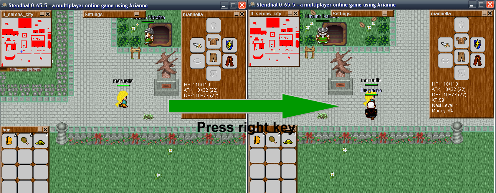
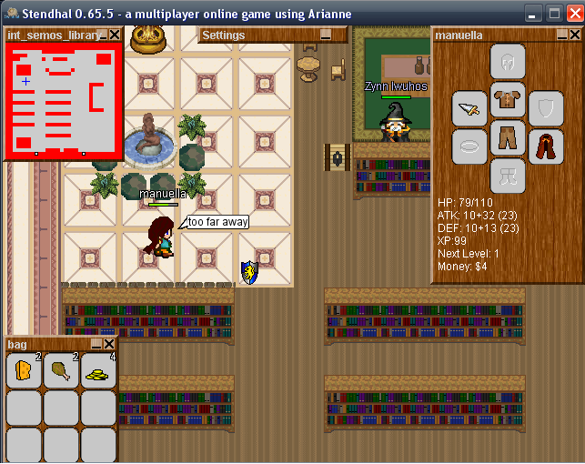
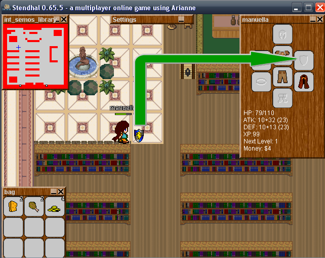
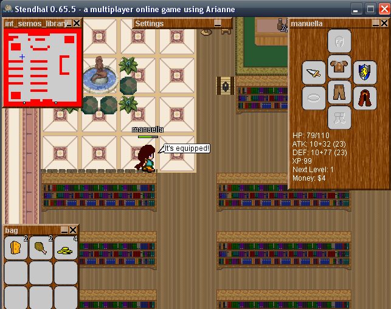
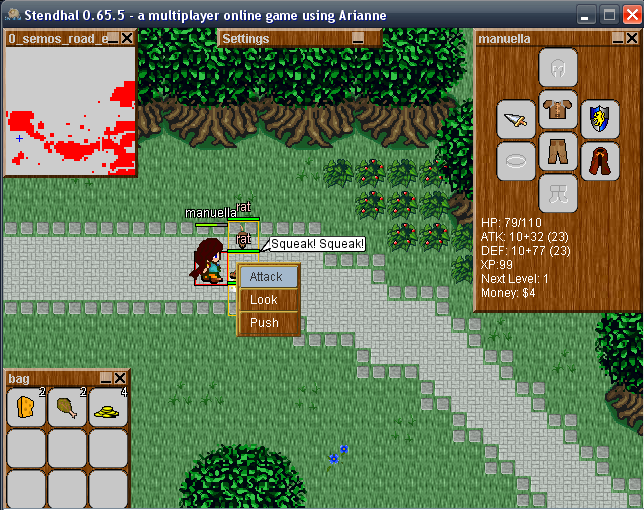
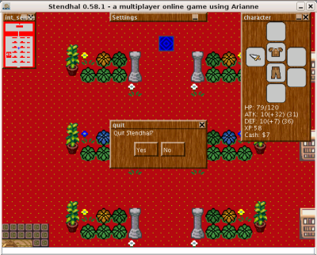

Use the keyboard arrows to move around on the Map.

You must hold down the direction keys to make the character to move. Your character will collide with elements that exists on the world, like other players and walls.
Alternatively you can move by double clicking on an empty place of the game area.
You also collide with map borders. When you reach a map border your screen won't move any further and two things might happen:
If you make the graphics window lose the focus while keeping an arrow key pressed, your character will keep going in that direction.
When your character collides with an object or changes zones it will stop, but you can resume its movement in the locked direction by pressing an arrow key of a different direction.
The movement-lock is released only when you press the arrow key of the locked direction of movement.
You can simply pass through the doorway by using the keyboard arrows. In the case that there is someone standing in front of the doorway and blocking it you still can pass through the door if you can get next to the door diagonally: just right click on the door and choose use.
If you have an animal following you such as a sheep, to change zones the animal MUST be within visible distance from your charater. To find out where your animal is, type /where <name of animal> ... for example /where sheep
When attacking someone or talking to someone it is nice to face them. To do this press Ctrl and a directional arrow to face in that direction. It is just an eye candy action as it has no effect on the game rules.
During the game you will find or buy items such as swords and shields. To move these items around the world, use the left click and drag
to the place you want them to be. You need to be next to the item. To
drop a smaller amount of a stackable item use the /drop command. Say
you have 2000 money and want to give 100 money away: /drop 100 money
You can manage your inventory by dressing items, dropping them to floor or by storing them on your backpack. On all the cases the procedure is the same: click on the item and drop it to the desired position.
Keep in mind that you must be near an item to equip it and that you can't drop it further than 8 positions from you.

Drag and drop the item in inventory slot you want.

And you have equipped it.

You can only equip armor into an armor slot, only boots into you feet slot, and so on. Your shield and attacking weapon you may hold in either hand. You may also hold other items in your hands. Tip: if you are harvesting some vegetable or collecting an item which an NPC has produced for you, and you have an empty hand slot, it may go into your hand not your bag.
Click the right mouse button over objects to see a contextual menu (which will include actions that can be performed on the object) and use the left mouse button to choose an action from the menu You can click outside the area of the menu to abort it.

In case you have closed the game dialog (the window where all the text and game information appears) you can open it again with Ctrl+L (hold Control Key and L key)
This dialog contains all the important events that happen in game so it is advised to have it visible.
Use Shift+UP arrow or Shift+DOWN arrow (hold Shift and press arrows) to put in your dialog text bar the last written sentence. Each time you press the up arrow (while still holding the shift key) you go further back in the history of your previously written sentences. When you use the down arrow instead you can go forward. That way you don't have to write again previously used sentences, for example, when you sell items.
Press ESC to exit. You will be prompted again to either really quit or return to the game. Alternatively you can simply close the window. In any case, your information about your inventory stuff and position in the game is automatically saved before you quit the game.
